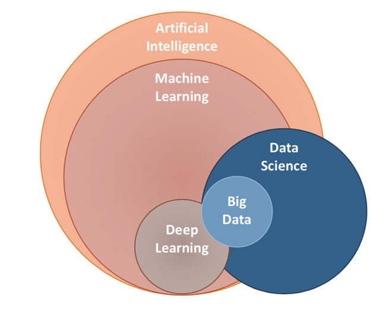
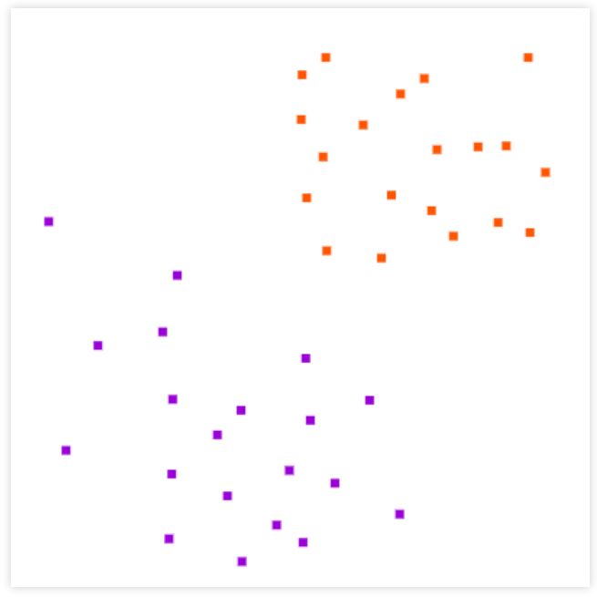
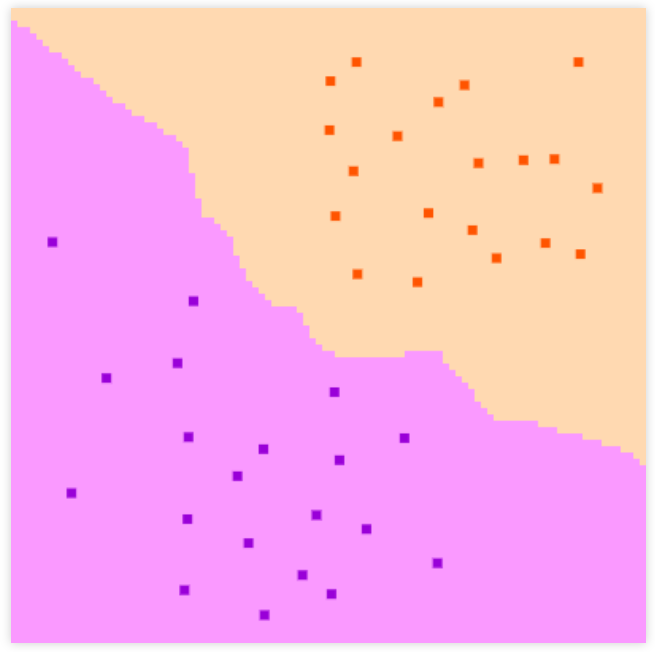
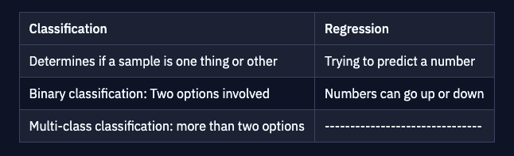
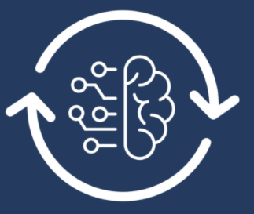
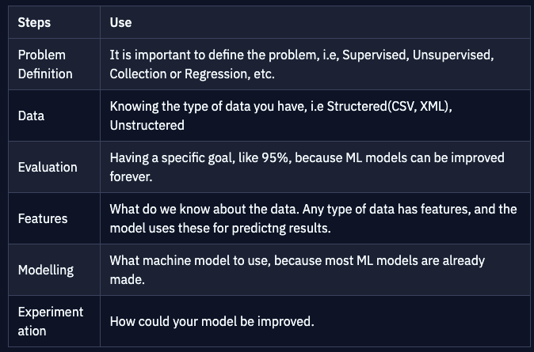
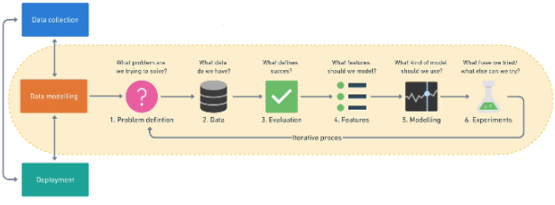
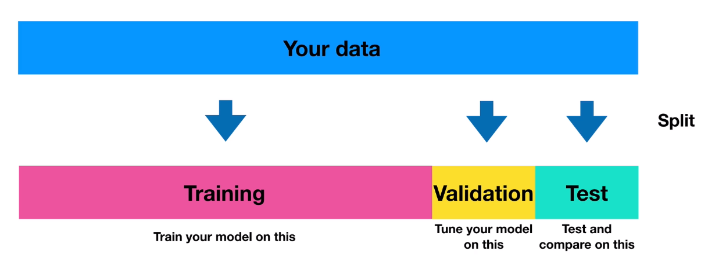
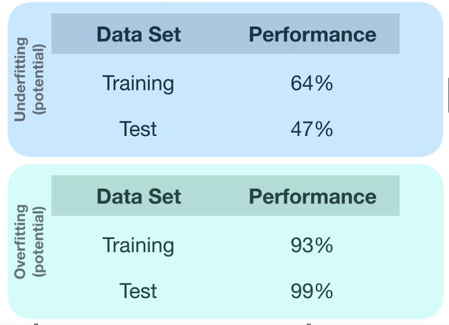

Basics of Machine Learning
Welcome to the complete Machine Learning Guide. Here you will learn everything about machine learning. You will be taught how to deal with different type of data. This course is more than enough for you to master Machine Learning's theoretical concepts.
Table of Contents:
What is Machine Learning?
Computers are machines, and machines are really fast in doing some things, that humans are not so fast in. But the computer requires programming from the humans to actually perform a task. Now humans can't work all the time, so we use machine learning, we program the computer in a way that it can find solutions to problems, and provide it to us, without ever breaking a sweat.
For example, if we need to find a route, that takes the least amount of time to reach a place, we ourselves, can take a map, and use a ruler to measure the smallest distance. But this will take us hours, maybe longer. Whereas if we program the computer to use if, else blocks to find the shortest distance, it will take barely a few seconds. This can be done by simple coding.
Here is the real question? What if we want to find out if a customer is angry, or happy with a product, using the reviews? We can't just use if and else to that because each customer has his own language. Here is when Machine Learning comes in.
What exactly is Machine Learning?(Part 2)
You may have heard of AI, Data Science, Neural Networks, Deep Learning, but what are those things, and how does Machine Learning apply to them? There is a diagram that can help us identify the concepts behind all of these things.
It all starts with AI, a machine that acts like a human. Currently, we only have Narrow AI, AI that is only smart at one thing, like chess, or detecting heart diseases from pictures. Whereas General AI, is one that is smart in everything. We are far from reaching that stage. Machine Learning is a subset of AI, an approach to try and achieve AI, thorugh systems that can find patterns in Data. Deep Learning, is one of the techniques of implementing Machine Learning. Data Science, on the other hand, overlaps Machine Learning, which is analyzing data. When we talk about Machine Learning, we generally also talk about Data Science. Here is the chart to keep in mind:

Machine Learning Playground 1
We can visualize Machine Learning using an amazing playground made by Google, called Teachable Machine. It helps you play with Machine Learning projects. Hit Get Started and play around with a few projects to see how the models are trained. The rained models can differentiate between things like, humans and dogs.
Machine Learning Playground 2.
Another amazing playground is "Machine Learning Playground", which can be trained to show recommended areas of different types. Here is the graph screen you will be welcomed with. You will be welcomed with a graph screen.
Let's say, the y-axis represents the length of the video and the x-axis represents the likes of the video. The yellow dots will represent the likes a specific user gives to videos, and the purple represents the dislikes. We can plot the user's data, and get a trained model:

Using this, we can train the model and get a portion of the graph, using we which we can recommend user videos that they will like.

Types of Machine Learning.
No matter how many subcategories of machine learning, all of them are meant to predict results, based on incoming data. There are few main types of Machine Learning: Supervised, Unsupervised, Transfer Learning and Reinforcement.

Supervised Learning
Firstly, we have Supervised Learning, a subset of Machine Learning. In Supervised Learning, the data already has categories, like CSV files, or data that is labeled. A supervised learning model, uses classification, or regression to differentiate data, by simply drawing a line. It can be used to predict stock prices, or hiring employees, based on experience, age, etc.


Unsupervised Learning
Unsupervised learning uses an algorithm that learns to form patterns in untagged data. Using ML(Machine Learning), the computer can find patterns in a set of data, and form groups, more like what was shown in the ML Playground of video recommendations. We can either make the machine use classification or Association, in which it learns what is what.
Transfer Learning
Transfer Learning leverages what one machine learning model has learned, into another model. You can create a model that uses lots of images and knows what the images are, for examples trees or cars. That way, the same model can be used to recognize pictures, but the pictures are of cats vs lions. The concept is same, but the images are different, much like the ML model of google.
Reinforcement Learning
Reinforcement Learning teaches the machine using trial and error; reward and punishment. So the program can simply learn to play a game, by playing it over a million times. More or less like how humans learn. If it does something wrong, the machine will be like "Oh, I will not do that next time, maybe try doing the opposite.".

Machine Learning Framework(Creating our own)
Using Python, we will now build our own Machine Learning Framework.
Machine Learning usually comes in three parts, Data Collection, Data modeling (aka, writing an algorithm to find patterns), and Deployment. Right now, we will work on Data modeling, by first creating a framework, and matching it to other data science projects.
Data Modelling
There are 6 steps to follow while modelling Data:

Visual Representation:

Modeling In Machine Learning
Modelling in Machine Learning is on of the most important concepts. Lets dig deeper into it. There are a few very important parts in Machine Learning:
Part 1: Splitting Data:
In this part, we first ask the question, "Based on our problem and data, what model should we use?". Modelling can be broken down into three parts, Choosing and training a model, Tuning a model, Model comparison. This is the most important part in Machine Learning. To achieve this, we split the data into three diffferent sets, one for training, one for validation, and one for testing.

Think of training, as practicing course material for your exams. As your exams come nearer, you take a practice paper to test yourself, this can be said as validation. Lastly, as you are giving the exam itself, and even though you are faced with different, never-seen-before questions, you know how to tackle them because of the experience you got from practice. This is the same way ML Models work. But in ML it is called Generalization.
Generalization: The ability for a machine learning model to perform well on data it hasn't seen before.
But what if we as students have already seen the exam paper? Easy, we will get top marks right? But did we learn anything? No. And that is where the training, validation, test splits come in, while dealing with Machine Learning. We split our data into sets and work with them, by first training them, test it on a sample, and taking it out in the real world and use it on other data.
Part 2: Choosing Data:
Now, that we have talked about splitting data, lets dig even deeper and alk about the first step, "Choosing the data and training it".
For Structured Data:
There are many ML models that are already made, so rather than creating an algorithm, we can simply use other already-developed ML models and use them. So our first goal is to choose which model works best with our data. When working with Structured Data, it is best to use Decision Tree models, like "Random Forests" , or "Gradient Boosting Algorithms"; like CatBoost, XGBoost.
For Unstructured Data:
Unstructured data is best dealt with using Deep Learning, and Transfer Learning, because there may not be an already created model for the type of output you need based on your data.
After choosing the model, we need to train our model. The goal here is to line up the inputs and outputs. We make our model to look at the inputs/features of the data, to make predictions about it, which is the output. Training the model should always be done on the training set that is divided from the main data.
Another main goal while training your data, is minimizing the time taken between your experiments. This means, training samll amounts of data first, and then moving to larger data sets. For example, if you have 100,000 examples in your data set, you might start training with only 10,000.
Part 3: Tuning a model:
Tuning normally takes place in your validation data split, but depending on your circumstances, it could also take place on your training split. Tuning in a model can be explained using a real-life example. Lets say you have to cook a meal in the oven without ever trying it before. First, you t ry cooking it with 180°C, but it utrns out raw, next you try it with 200 °C and it is still a little uncooked. But lastly, you try with 250°C, and the meal is cooked perfectly. But in a model, you can use tuning to change numbers, layers etc. (Will be looked later on)
Part 4: Model comparison:
Comparing models takes place on the test set. This is used to see how your model generalizes with the types of problems it faces. A good model will give out similar results in all three sets. In model comparison, there are two types of results, "Overfitting", and "Underfitting". Underfitting means that your model gives a higher success rate in the training model rather than the test model. And overfitting is the opposite; higher results in the test, than the training data.

The best type of result is the one that fits just right, or in other words, a result that is balanced. Overfitting is not good because it literally is the same as you giving an exam after seeing the paper, which means you will be able to answer only the specific exam rightly, no other types of problems. One of the main reasons for overfitting is data leakage from the test data set to the training set.
All work done by Abdullah Rajput.©2022